1004D13 POWER UNIT (automatic transmission) with support frame assembly, front suspension removed - Separation and reassembly
- Path
- Procedures > 10 ENGINE > 1004 ENGINE AND POWER UNIT > 1004D REMOVE ENGINE AND WASH > 1004D13 POWER UNIT (automatic transmission) with support frame assembly, front suspension removed - Separation and reassembly
- Kind
- repair procedure (removal / refitting; the operation number is the code)
- Applies to
- engines: 2.4 20V, 3.0 V6, 3.2 V6; all production periods
- Interactive page
- https://sloeber94.github.io/elrnDB-lThss/en/#/183466
Applies to: engines: 3.0 V6, 3.2 V6; all production periods
 Removing
Removing
 Refitting
Refitting1. Undo the connectors on the power assisted steering pump for the fluid inlet (1a) and outlet (1b) pipes, keeping the copper washers underneath.
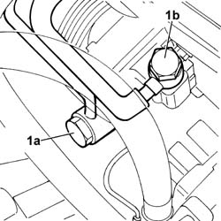
Applies to: engines: 3.0 V6, 3.2 V6; all production periods
1. Release the power assisted steering fluid supply and return pipes (1a) from the retaining bands (1b) on the timing covers and under the alternator.
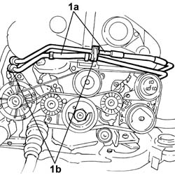
Applies to: engines: 3.0 V6, 3.2 V6; all production periods
- Position a suitable container for collecting the engine coolant.
1. Open the bands (1a) and disconnect the coolant hose (1b) from the thermostat unit (1c) and from the gearbox fluid heat exchanger (1d).
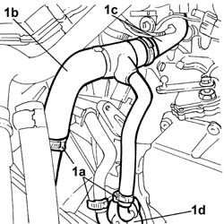
Applies to: engines: 3.0 V6, 3.2 V6; all production periods
1. Open the bands (1a) retaining the boots (1b) and remove the driveshafts (1c)
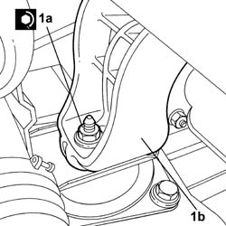
Applies to: engines: 3.0 V6, 3.2 V6; all production periods
1. Using a stand (1a) and a suitable hoist (1b), secure the power unit.
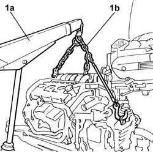
Applies to: engines: 3.0 V6, 3.2 V6; all production periods
1. Undo the nut fixing the timing side engine support.
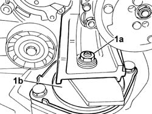
Applies to: engines: 3.0 V6, 3.2 V6; all production periods
1. Undo the nut fixing the rear engine support, then lift the power unit from the support frame and rest it on a stand.
Applies to: engines: 3.0 V6, 3.2 V6; all production periods
Refitting
Removing1. Using a suitable lifting system, raise the power unit from the stand and position it on the support frame, then secure the timing side engine support, tightening the fixing nut to the recommended torque.
 | Value - daNm | Fastening | Component | Ø |
|---|---|---|---|---|
1a | (Engine support) 4.5 | Nut | RIGID ENGINE MOUNT, TIMING SIDE | M10 X 1.25 |
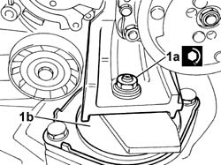
Applies to: engines: 3.0 V6, 3.2 V6; all production periods
1. Position the rear support (1b) tightening the fixing nut (1a) to the recommended torque.
| Value - daNm | Fastening | Component | Ø |
|---|---|---|---|---|
1b | (to the flexible mounting) 4 | Nut | RIGID REAR SUPPORT POWER UNIT | M10 |
Applies to: engines: 3.0 V6, 3.2 V6; all production periods
- Remove the lifting system
- Position the driveshafts, which have been greased with the recommended product, and secure the boots using the bands.
 | Description | Qty. | Component | Type | Classification |
|---|---|---|---|---|---|
. | TUTELA MRM 3 | - | DRIVESHAFT CONSTANT VELOCITY JOINTS | Grease | - |
- Connect the coolant hose to the thermostat unit and to the gearbox fluid heat exchanger, then close the retaining bands.
- Secure the power assisted steering fluid supply and return pipes to the retaining bands.
1. Tighten the connectors on the power assisted steering pump for the fluid inlet (1a) and outlet (1b) pipes, positioning the copper washers.
| Value - daNm | Fastening | Component | Ø |
|---|---|---|---|---|
1a | 4 | Connector | POWER STEERING PUMP SUPPLY PIPE | M18 X 1.5 |
| Value - daNm | Fastening | Component | Ø |
|---|---|---|---|---|
1b | 4 | Connector | POWER ASSISTED STEERING PUMP/BOX PIPE | M16 X 1.5 |
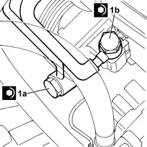
Applies to: engines: 2.4 20V; all production periods
Removing
Refitting1. Disconnect the pipes from the power assisted steering system cooling coil.
2. Undo the bolt (2a) and disconnect the connector (2b) for the air conditioning system pipe.
3. Remove the engine cooling radiator complete with fan, condenser and power assisted steering system cooling coil.
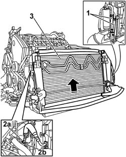
Applies to: engines: 2.4 20V; all production periods
1. Disconnect the band fastening the right driveshaft to the intermediate driveshaft and release the driveshaft.
2. Disconnect the power assisted steering system pressurized oil supply pipe from the pump.
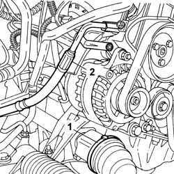
Applies to: engines: 2.4 20V; all production periods
1. Disconnect the band fastening the left driveshaft to the differential and release the driveshaft.
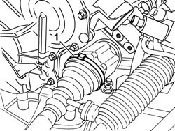
Applies to: engines: 2.4 20V; all production periods
- Remove the engine support connecting rod.
1. Fit a suitable size bracket by the reaction rod support.
2. Secure the chain and hook assembly to the bracket fitted previously and to the bracket (2a) on the bellhousing; secure the entire assembly to the hydraulic lifting device (2b).
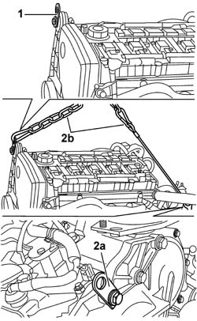
Applies to: engines: 2.4 20V; all production periods
1. Undo the nut (1a) fixing the timing side engine support (1b) to the supporting crossmember.
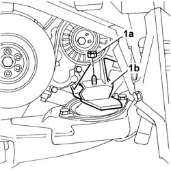
Applies to: engines: 2.4 20V; all production periods
- Undo the nut (1a) fixing the rear engine support (1b) to the supporting crossmember.
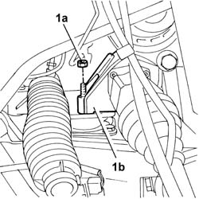
Applies to: engines: 2.4 20V; all production periods
- Raise the power unit.
- Position the power unit on a special support and remove the hoist, making sure that the unit is properly balanced.
Applies to: engines: 2.4 20V; all production periods
Refitting
Removing- Secure the power unit with chains for hoisting to the hydraulic lifting device.
- Position the power unit on the chassis, fitting the timing side engine support and the rear support on the flexible mounting bearings.
- Tighten the nut fixing the rear engine support to the supporting crossmember.
| Value - daNm | Fastening | Component | Ø |
|---|---|---|---|---|
. | (to crossmember) 4.5 | Nut | POWER UNIT REAR RIGID MOUNT | M10 X 1.25 |
- Tighten the nut fixing the timing side engine support to the supporting crossmember.
| Value - daNm | Fastening | Component | Ø |
|---|---|---|---|---|
. | (to crossmember) 4.5 | Nut | RIGID ENGINE MOUNT, TIMING SIDE | M10 X 1.25 |
- Release the engine from the supporting chains.
- Remove the bracket positioned for attaching the power unit supporting hooks.
- Position the connecting rod for the reaction rod and tighten the fixing bolt.
| Value - daNm | Fastening | Component | Ø |
|---|---|---|---|---|
. | (to engine support) 5 | Bolt | POWER UNIT REACTION ROD | M10 X 1.25 |
- Fit the three-lobe joints for the driveshafts in their housings in the differential and the intermediate shaft.
- Fit the boots on both sides and secure the retaining bands.
- Connect the power assisted steering system pressurized oil supply pipe to the pump.
| Value - daNm | Fastening | Component | Ø |
|---|---|---|---|---|
. | (on pump) 5 | Connector | PIPE BTWN PUMP + POWER STEERING BOX | M16 X 1.5 |
- Fit the engine cooling radiator complete with fan, condenser and power assisted steering system cooling coil.
- Connect the air conditioning system pipe connector to the compressor.
- Connect the pipes to the power assisted steering system cooling coil.
Topics that link to this page (5)
- 1020D26 Flywheel side oil seal COVER - R.R. and Replace seals
- 1020D39 Flywheel side OIL SEAL - Replace for versions with automatic transmission
- 1024B20 ENGINE FLYWHEEL - R&R for versions with automatic transmission
- 2130A10 AUTOMATIC TRANSMISSION - R.R.
- 2130B12 Automatic transmission TORQUE CONVERTER - R.R.